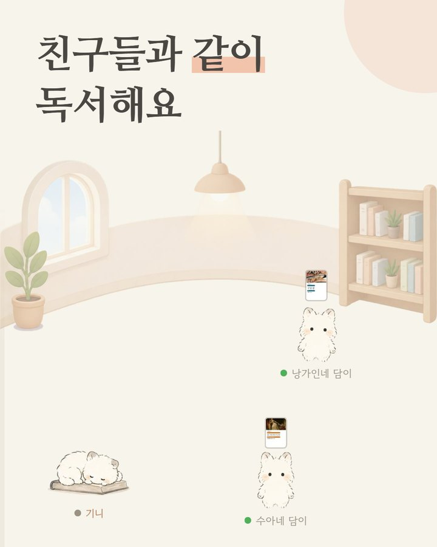
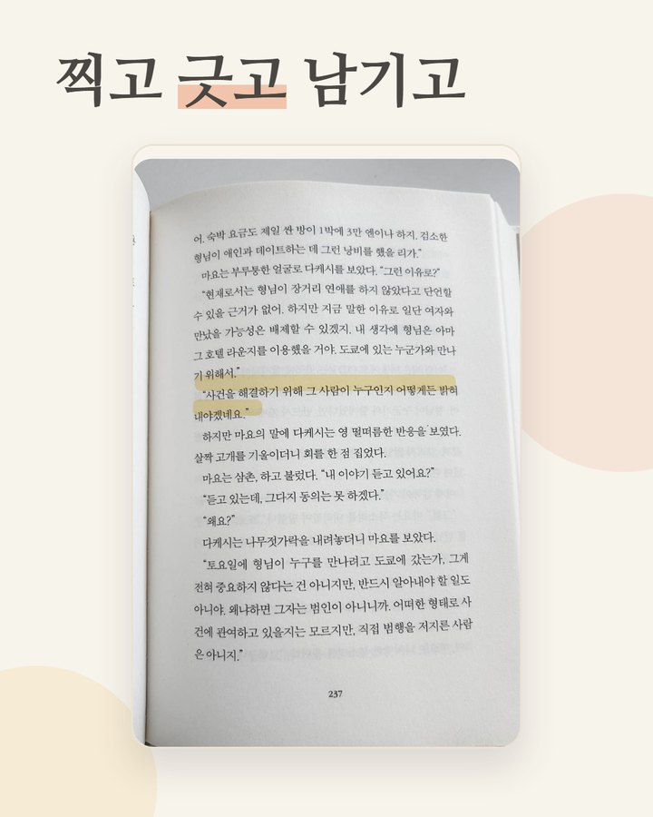
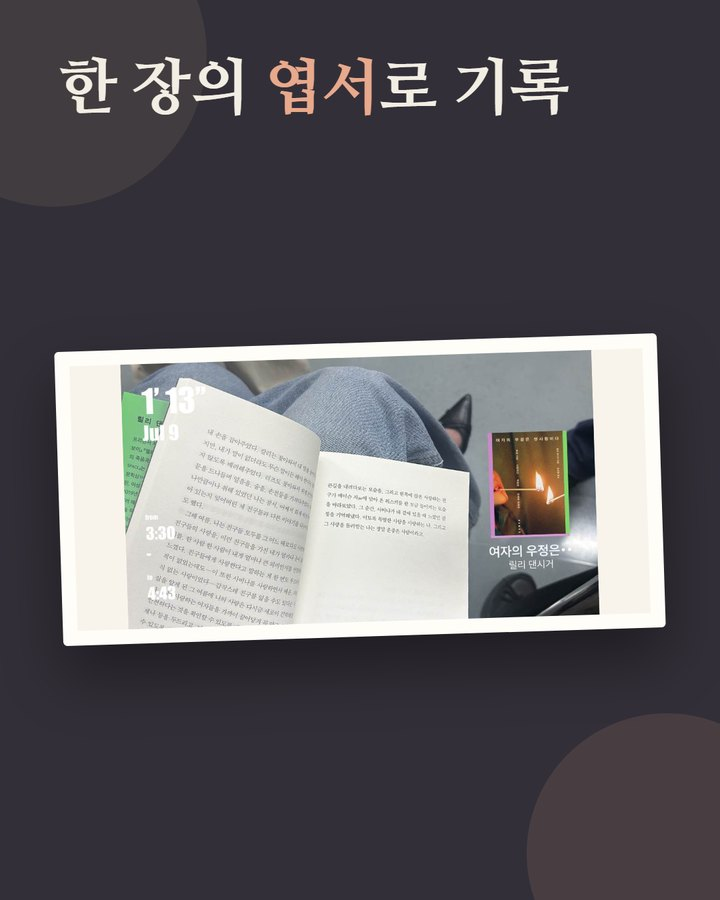
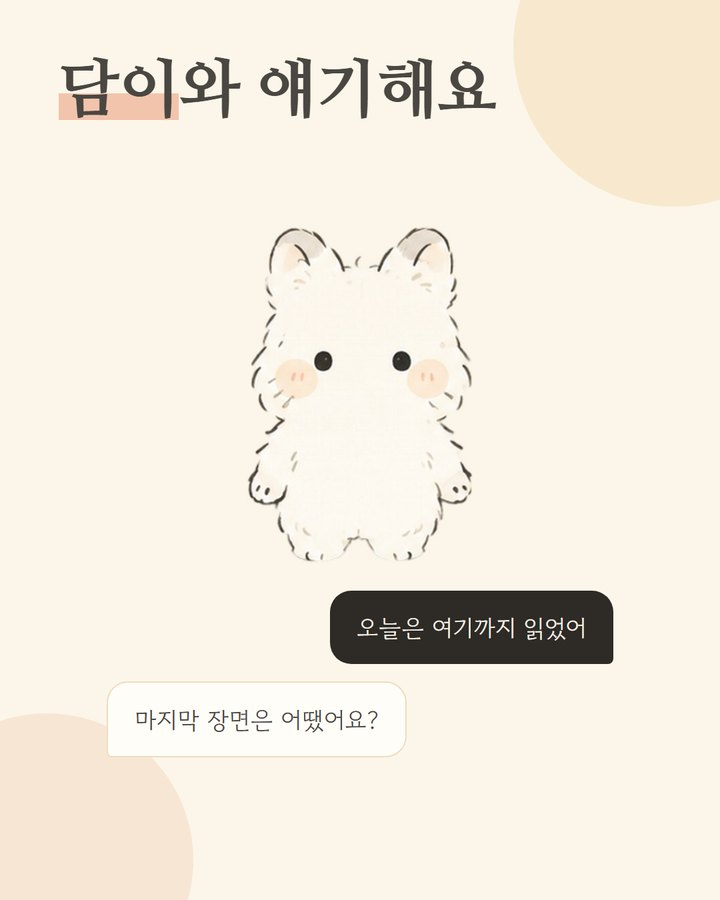

책담독서 전 과정을 함께하는 서비스
- Stack
- Spring BootPostgreSQLWebSocketReact NativeAWS
- Role
- 팀장 · 백엔드 — 도서관 방 · 참여 상태 기능, 운영 인프라 · 출시 리드
- Result
- App Store 출시(2026.09) · Play Store 출시 대기 중, 운영 중
+
구현한 기술
- 도서관 방 · 참여 상태 API — Spring Boot로 방 생성 · 코드 초대 · 정원 판정과 참여 현황 게시 · 조회 API를 구현하고 React Native 로비 · 방 화면과 연결. 동시 입장 경합은 비관적 잠금으로 막았고, 방 생성 → 초대 → 독서 상태 표시까지 실기기로 검증
- WebSocket 실시간 전환 — 참여 현황을 30초 폴링으로 조회하던 구조를 STOMP over WebSocket 구독으로 교체. 수신은 WebSocket 전용, 쓰기는 REST, 폴링은 폴백으로 남겨 채널이 끊겨도 동작하게 설계. 방 채팅도 같은 채널로 구현하고 실소켓 통합 테스트로 경계를 고정
- 운영 인프라 · 배포 — AWS 개발 · 운영 서버 구성, GitHub Actions OIDC 자동 배포, OTA 업데이트와 최소 버전 부팅 관문(강제 업데이트 = 서버 정책 + 앱 부팅 게이트)
- 일일 지표 — 신규 가입 · DAU · 발화 · OCR · 방 참여를 매일 아침 집계해 Slack으로 전송하고 가입 즉시 알림. 심사용 계정 제외, 하루 경계는 KST 자정
해결한 문제
- 90초 만료 판정 폐기 — 상태 게시가 90초 끊기면 "읽지 않음"으로 판정하던 설계였는데, iOS는 화면만 꺼도 게시가 멈춰 책을 읽느라 화면을 끈 사용자가 "읽지 않음"으로 표시됐다. 시간을 늘리는 건 근거 없는 숫자로 문제를 미루는 것이라 판단해 판정 자체를 폐기하고 사용자가 설정한 상태를 유지, 앱 재시작 시 1회 게시로 잔존 상태를 정리. 강제 종료 시 상태가 잠시 남는 대가는 문서화
- WebSocket 메시지 레이스 — 내가 보낸 채팅의 WebSocket 사본이 REST 응답보다 먼저 도착해 화면에 중복되는 경합. 클라이언트 메시지 ID 장부를 두고 REST 응답을 정본으로 삼아 덮어쓰도록 해결
- 운영 책 검색 전면 500 — 특정 JPA 쿼리 조합이 운영에서만 무조건 500. 화면 오류 문구로 계층을 좁히고, 두 사용자에게 같이 발생한 점을 근거로 공통 서버 문제로 범위를 좁힌 뒤 Testcontainers로 그 쿼리만 재현해 원인을 확인하고 당일 운영 반영. CI가 못 잡은 이유는 검색만 메모리 DB로 돌았기 때문
- RDS 비밀번호 자동 회전 — 아무도 바꾸지 않았는데 DB 인증 실패. 커넥션 풀 고갈처럼 보였지만 아래 계층의 인증 오류였고, Secrets Manager 7일 자동 회전이 원인. 앱이 시크릿을 직접 읽는 JDBC 드라이버로 바꿔 낡은 비밀번호가 생길 자리를 구조에서 없앰